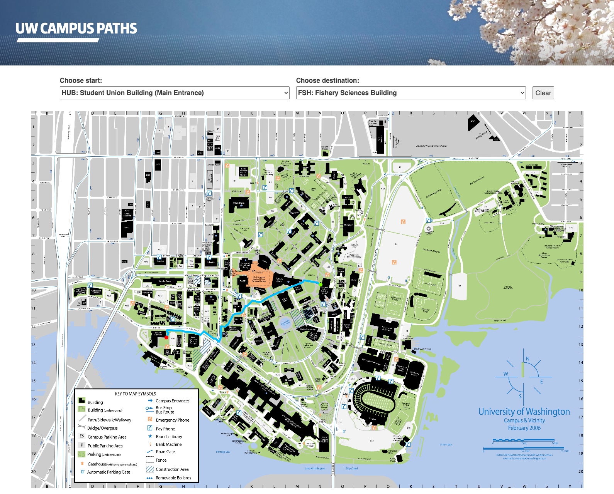

Campus Paths
CSE 331: Software Design and Implementation Project | Dec 2020 React, Spark Java
Campus Maps is a web application that displays the quickest path from two buildings on UW campus using Dijkstra’s algorithm. The app was built using React to for the front-end and a Java Spark server for the back-end.